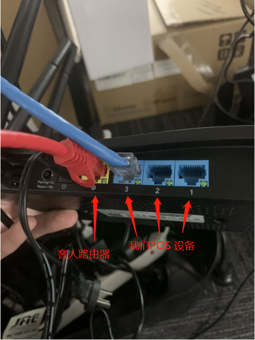
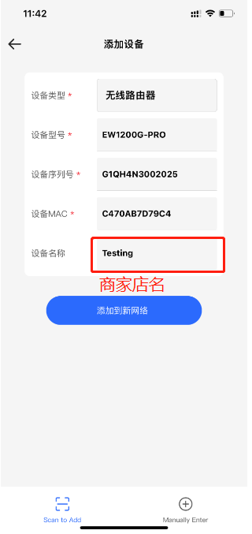
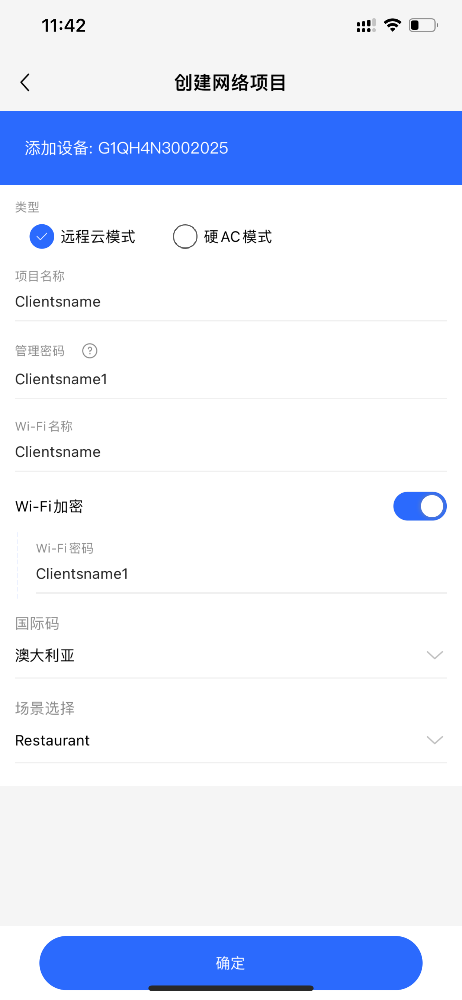

Ruijie 安装
2024年11月13日 · Charlie
先插上电源， Ruijie 上的黄色网口 (WAN口/小地球图标) 连接在客人的路由器上LAN口上 (一般是蓝色)
Ruijie 剩下的蓝色口(LAN口上) 可以连接在我们POS机上或者打印机上，如果口不够可以增加 Network Switch 来扩展。
然后打开 Ruijie 手机 APP，并扫描 Ruijie 设备下的 二维码进行设置
一般我会把 Project Name 和 WiFi Name 填写为商家的店名， 如果是连锁店 加地址。 Manager Password 和 WiFi密码同商家店名多加一个数字1
在POS机器上，打开 Chrome 浏览器，输入 Ruijie 路由器网段 192.168.110.1，进入后需要重新设置一下，填写信息同上。
此时 Ruijie 路由器就已经设置完成，并且POS所有相关的网段都设置成 Ruijie路由器即可